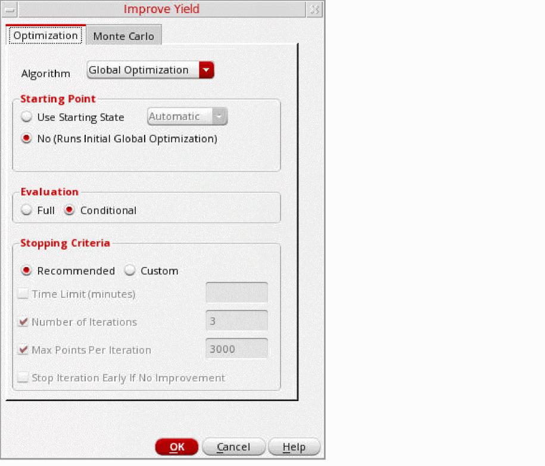

Improving Yield of a Design
To improve the yield of a design:
- From the Select a Run Mode drop-down list, choose Improve Yield.
-
Click Simulation Options.
The Improve Yield form opens.
 - On the Optimization tab, from the Algorithm drop-down list, select an optimization algorithm.
- From the Starting Point options, select a starting point for the simulation run.
- From the Evaluation options, select one of the following evaluation types:
-
In the Stopping Criteria section, select the Recommended check box to use the following recommendations for stopping criterion:
If you want to modify the recommended options, select the Custom check box, and then select one or more of the following stopping criteria:- To set a time limit for the run, select the Time Limit (minutes) check box and enter a value.
- To specify the number of sizing/Monte Carlo iterations, select the Number of Iterations check box and enter the number in the field.
- If you want to specify the maximum number of points processed per iteration, select the Max Points Per Iteration check box and enter the number of points in the field.
- If you want to stop the process early if the sizing results in no improvement, select the Stop Iteration Early If No Improvement check box.
- Click the Monte Carlo tab to specify the options for Monte Carlo run.
- From the Statistical Variation options, select Process, Mismatch, or All.
- From the Sampling Method drop-down list, select Random, Latin Hypercube, or Low-Discrepancy Sequence.
- In the Number of Points field, specify the number of Monte Carlo points to simulate.
- If the Sampling Method is selected as Latin Hypercube, specify the number of bins (subdivisions) in the Number of Bins field.
-
(Optional) In the Monte Carlo Seed field, enter the seed number. If you do not specify any value the default value
12345is used. - (Optional) If you want to specify a starting run number, select the Starting Run Number check box and enter the starting run number.
- Click Specify Tests for Monte Carlo to select the tests for which you want to run the Monte Carlo simulation.
- Click OK to close the form.
- Click Run Simulation.
When the Improve Yield run is finished, the Data View lists the Improve Yield check point. Expanding this check point displays the different runs that make up a full Improve Yield run, including iterations of Optimization and Monte Carlo. You can view the results of any of these runs by right-clicking and choosing View Results.
Several factors are considered in generating statistical corners, which includes overall yield estimate, individual yield of each specification, and sigma to target value of each specification. Statistical corners are created for specs that have low yield as well as for specs that have yield estimate=100%, but low sigma to target value. When the overall yield is high, statistical corners are created at the worst sample. When the yield is low, the Improve Yield method is less effective in creating statistical corners.
Related Topics
Full Evaluation and Conditional Evaluation
Return to top